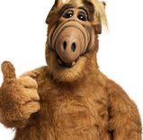

Domhnall CAMPBELL
Plus de dix années d'expérience dans la traduction, la localisation et l'international.

Mon expérience
TRADUCTEUR / CHEF DE PROJET FREELANCE
Aout 2014 / aujourd’hui
- Traduction, relecture et gestion de projets logiciels, web, magazine et audiovisuel ;
- Direction d’acteurs en studio sur les projets de doublage et voix off ;
- Participation à la rédaction du document de bonnes pratiques de localisation recommandée par l’International Games Developper Association ;
- Consulting et conseils en internationalisation pour divers clients (Microïds, Anuman, Loveiswall, Editions 619, Kid’s Mania, Kalypso) ;
- Traduction en collaboration avec plusieurs traducteurs sur des projets de grande envergure (+ 2 millions de mots) ;
ANKAMA – ROUBAIX, FRANCE
Responsable localisation – février 2010 / juillet 2014
- Gestion de la localisation des productions Ankama sur de multiples supports (logiciels, outils internes, jeux vidéo, applications iOS / Android, web, édition, animation, vidéo) ;
- Rédaction et suivi du cahier des charges des logiciels et plateformes internes (web) des outils de traduction ;
- Gestion des fichiers de traduction et import/export via les outils de développement ;
- Supervision du département traduction (management d’équipe, budget, administration, contrats, factures, devis) ;
- Rédaction et traduction de contenus web, corporate, relations presse et marketing ;
ROCKSTAR GAMES – LINCOLN, ROYAUME-UNI
Chef d’équipe localisation sénior – 2006 / février 2010
- Gestion de la localisation sur les projets AAA pour EFIGS, japonais et russe ;
- Traduction, relecture et édition des productions Rockstar Games ;
- Gestion des certifications localisation (TRC, TCR, lotcheck) auprès des constructeurs ;
- Coordination et travail en équipe avec les testeurs localisation, testeurs logiciel, développeurs, graphistes et chefs de projets ;
Mes compétences
- Lagues : anglais, allemand, italien, espagnol, portugais, japonais
- International
- Localisation
- Esprit de synthèse
- Suite Office
- T.A.O. (Trados, Wordfast, MemoQ)
Ma formation
UNIVERSITE DE HAUTE BRETAGNE - RENNES
Licence L.E.A. - 2006
{kind=link}